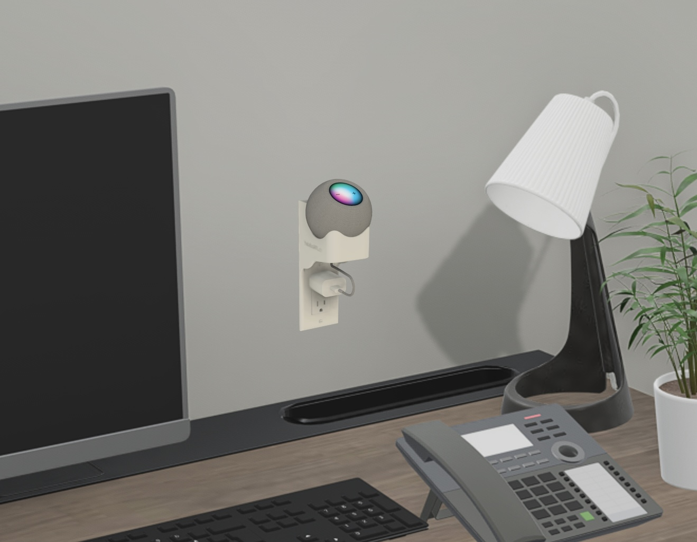
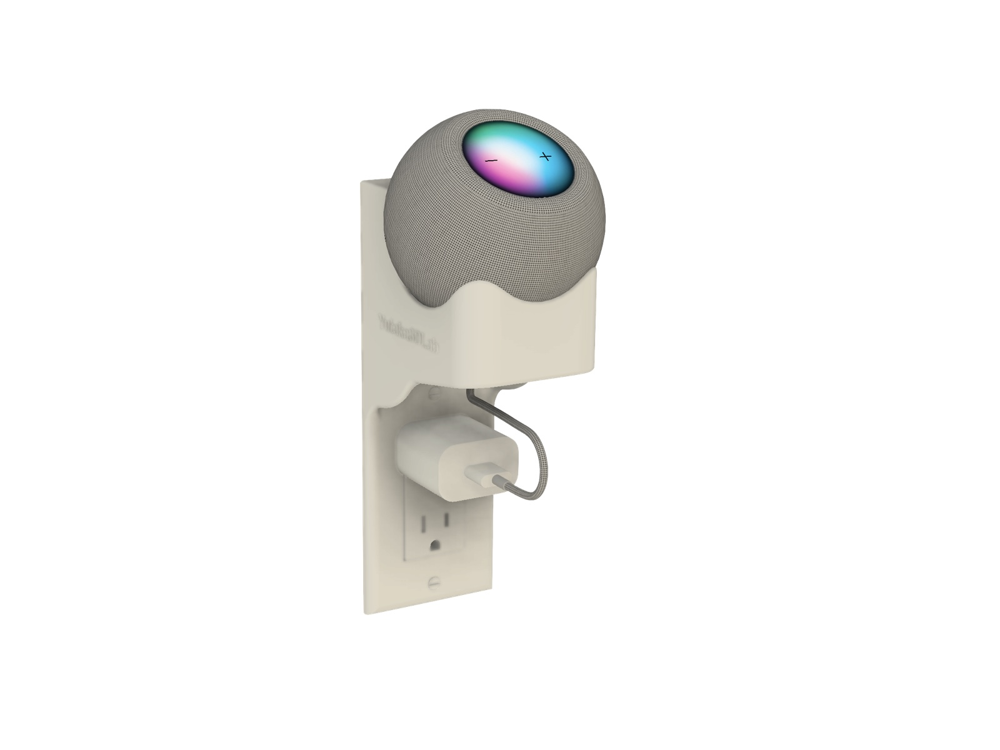
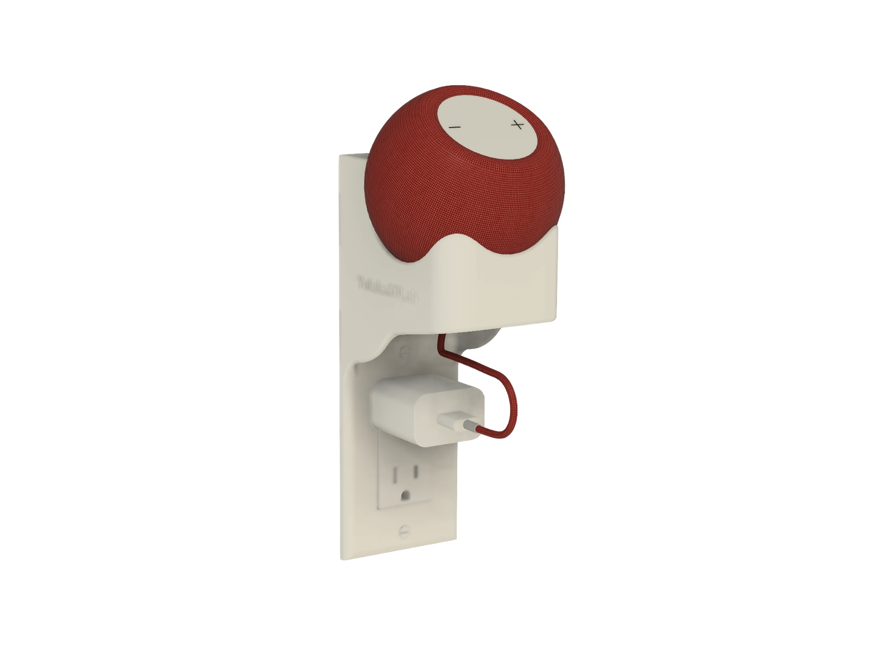
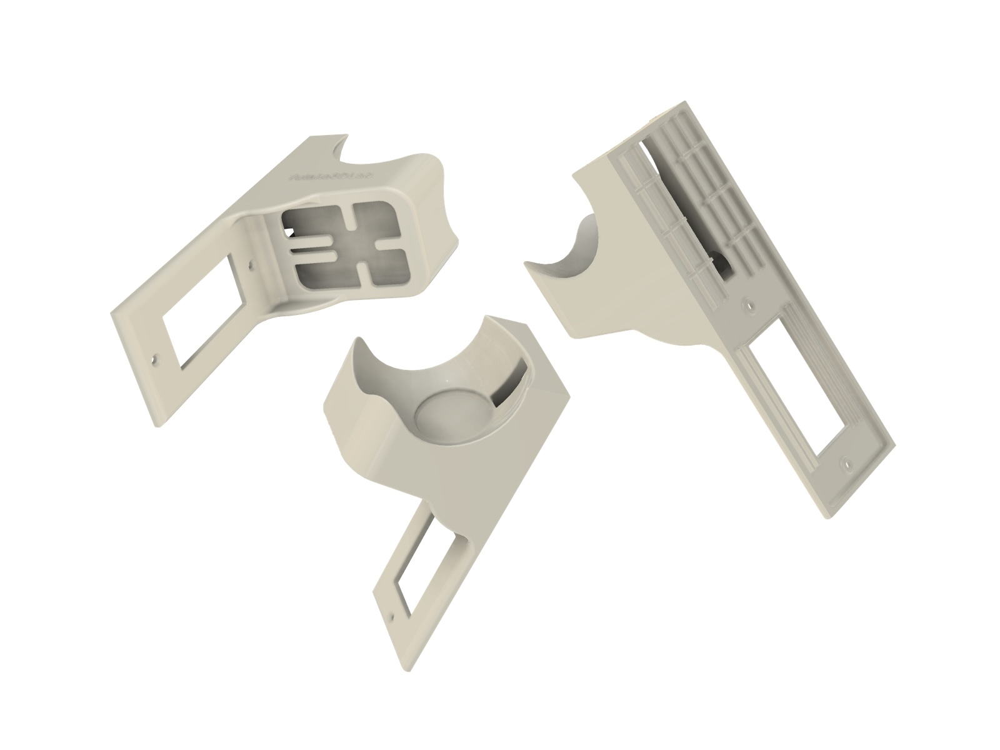
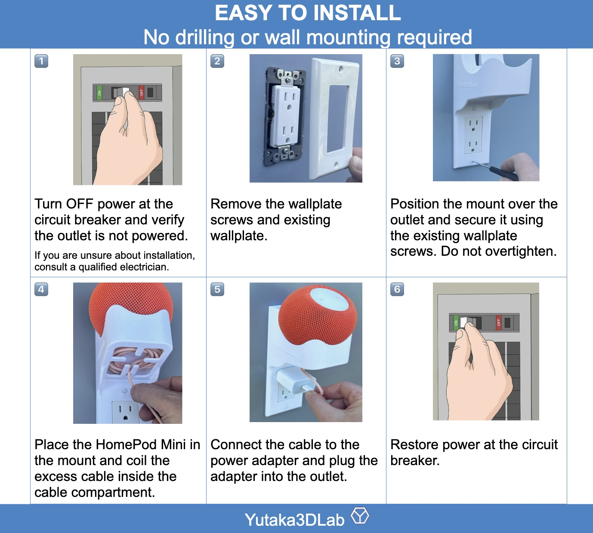
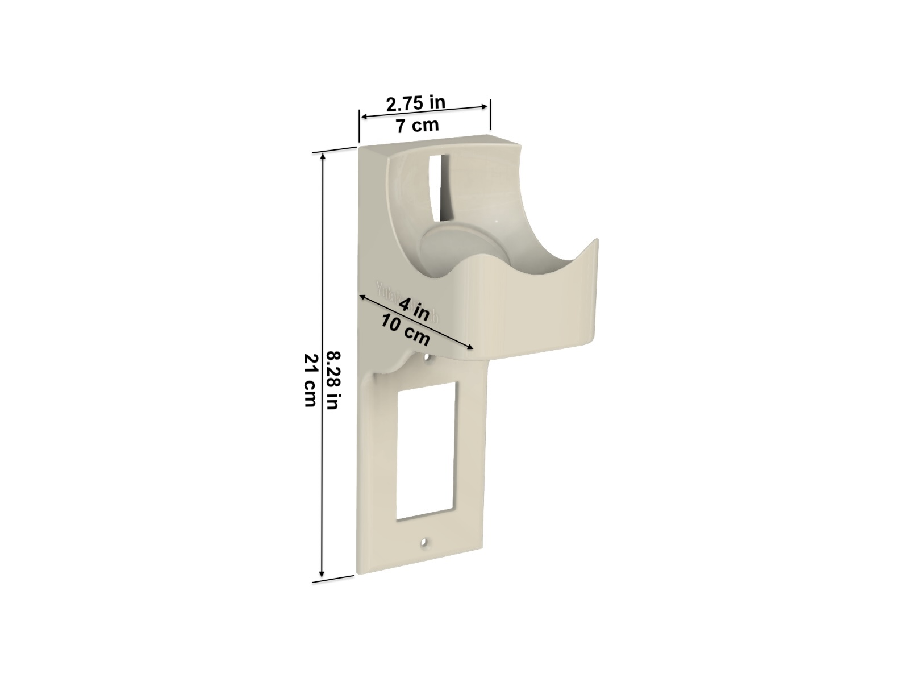
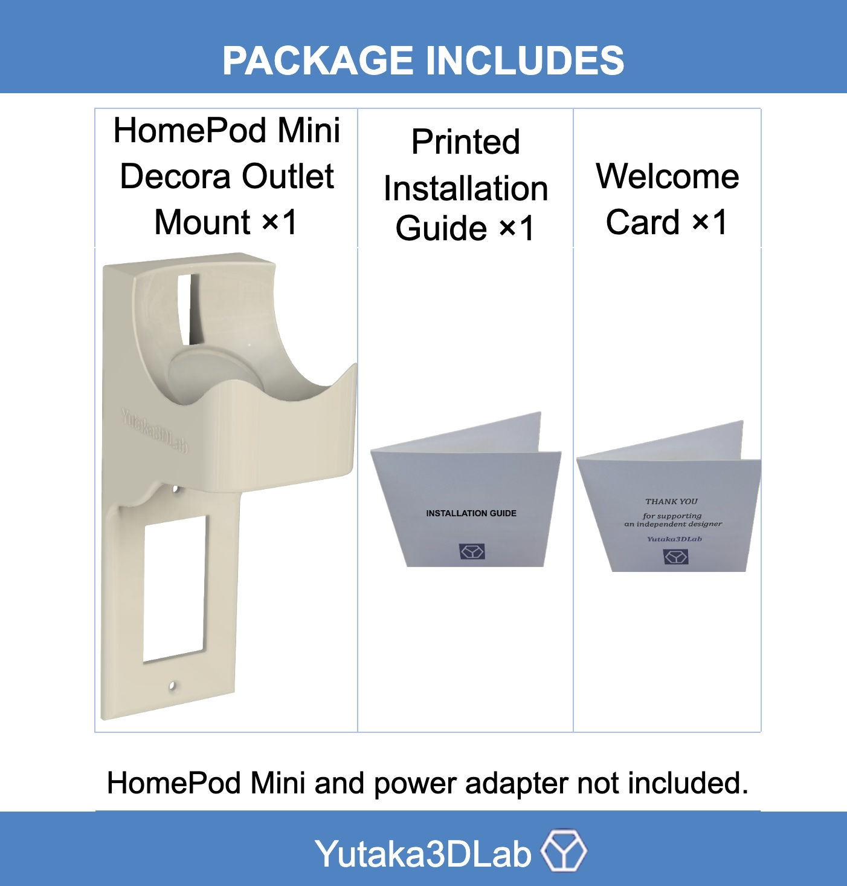

Uses the outlet screws
The mount installs behind a standard US Decora wall plate using the existing wall-plate screws.

HomePod
Decora outlet installation · Hidden cable management · No separate wall drilling
Mount your HomePod Mini directly at a standard US Decora outlet while keeping the cable organized close to the wall.
The mount installs behind a standard US Decora wall plate using the existing wall-plate screws.
The integrated path keeps excess HomePod Mini cable organized close to the outlet.
No separate wall holes or adhesive mounting are required for the mount itself.
Product overview
A purpose-built mount for a clean outlet installation.
Design details



Installation
Turn off power at the circuit breaker before removing or reinstalling a wall plate.

Specifications

Physical package

Choose your format
Buy the finished product or download the design for your own 3D printer.
Ready to use
3D printed, inspected and shipped ready to install.
For makers
Download the model from your preferred Yutaka3DLab marketplace.
Support
Contact Yutaka3DLab and include your order platform and product name so we can help quickly.
Apple and HomePod are trademarks of Apple Inc. Decora is a trademark of Leviton Manufacturing Co., Inc. Yutaka3DLab is an independent designer and is not affiliated with or endorsed by Apple or Leviton. Turn off power at the circuit breaker before removing or reinstalling an outlet wall plate. If you are unsure about electrical work, consult a qualified electrician.